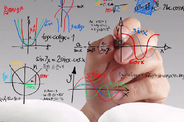

El término propedéutico o propedéutica deriva del griego pro que significa
“como antes” y paideutikós que hace referencia a la enseñanza. Por tanto,
propedéutico refiere al conjunto de saberes o conocimientos que son
necesarios para preparar el estudio de una ciencia o disciplina. Es la elección de
un plan de estudios encaminado a prepararte para ingresar al área educativa
de tu preferencia, se imparte para que todos los estudiantes adquieran el
conocimiento y las bases necesarias para seguir adelante en la educación
superior y así terminar su carrera satisfactoriamente.
Propósito del área propedéutica
Económico- Administrativa
Introduce al estudiante en el en el análisis de
situaciones económicas y financieras de un
país, empresa o persona, así como la
atención a problemáticas económicoadministrativas vinculadas a las
organizaciones y los sectores productivos
del país.Atiende a las necesidades humanas de organización, disciplina económica política–cultural,
donde se utilizan recursos para producir, distribuir o consumir bienes materiales.
Cursarás las siguientes asignaturas:
Temas de Administración
Introducción a la Economía
Introducción al Derecho
Propósito del área propedéutica Físico
Matemática
Formar individuos en el área de las ciencias físicas
y matemáticas para que genere, difunda y
aplique el conocimiento para entender
mejor cualitativamente el mundo en que vivimos.
El área de físico matemática consiste en la
aplicación de las matemáticas a problemas del
ámbito de la física y el desarrollo de métodos
matemáticos apropiados para estos usos y para el
desarrollo de conocimientos físicos

Cursarás las siguientes asignaturas:
Temas de Física
Dibujo Técnico
Matemáticas Aplicadas
Propósito del área propedéutica
Químico-Biológica
Esta área propedéutica permite análisis clínicos, de alimentos y control de calidad de productos
de industrialización, comprende campos de conocimiento como la Química, Biología, Botánica, Anatomía,
etc., con el objetivo de tener conocimientos, habilidades y actitudes necesarias para desempeñar funciones en pro de la salud, evaluar, reproducir y diseñar métodos disponibles en procesos de laboratorio.
También incluye disciplinas que estudian a los organismos vivos (humanos y animales)
en su morfología, desarrollo, comportamiento y enfermedad (para preservar a su salud).
Cursarás las siguientes asignaturas:
Introducción a la Bioquímica
Temas de Biología Contemporánea
Temas de Ciencias de la Salud
Propósito del área propedéutica
Humanidades y ciencias sociales
Esta área propedéutica se encarga de introducir al bachiller en el estudio y análisis
del desarrollo de las sociedades humanas y las normas de convivencia establecidas.
Convergen carreras abocadas al estudio del pensamiento, la historia y la expresión
(oral, escrita, gráfica, corporal, visual y musical) del ser humano; disciplinas que
pretenden aclarar las dudas de éste acerca de su origen, existencia y
trascendencia, así como el los sucesos del mundo que le rodea.